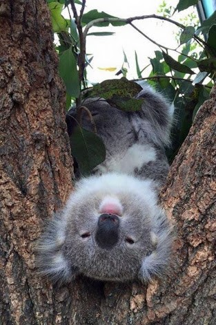
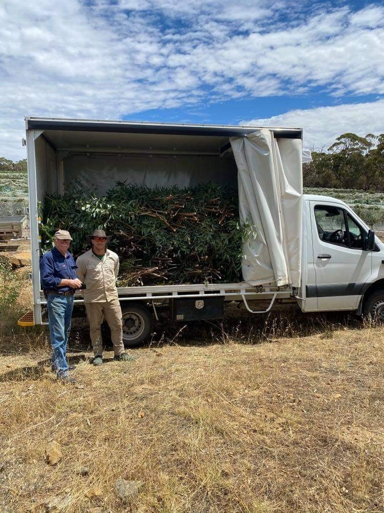

- January -
- February - Liaise with Volunteer coordinator regrouping Weekly Plantation Volunteers
- March - Weekly Volunteers resume
- April - Weekly Volunteers - Organise gum planting days
- May - Weekly volunteers - Organise gum planting days
- June - Weekly Volunteers
- July - Weekly Volunteers - Planting days
- August - Weekly Volunteers - Planting days - Organise Gum Supporters Day for October
- September - Weekly volunteers - Liaise with Volunteer Coordinator for seed propagation - Plan next year’s gum plantings with landholders
- October - Weekly volunteers - Organise Thankyou passes for Gum supporters
- November - Weekly Volunteers finish for the year
- December -
Annual Plantation Maintenance Plan Guide
- January - Water any saplings as needed
- February - Water saplings as needed
- March - Water saplings as needed - Work with landholders, planning plantings, ripping etc.
- April - Long Ridge, continue weeding, pruning etc. - Collect gum seeds
- May - Long Ridge, continue weeding, pruning etc. - Collect gum seeds
- June - Update Gum procedures manual - Planting days
- July - Update Gum Procedures Manual - Prepare for debris pile burn offs - Planting days
- August - Prepare for debris pile burns offs - Planting days - Organise Volunteers for seed propagation in September/October
- September - Forest aviary plantation weed and whipper snip - Pile burn offs
- October - Pile burn offs - Slashing – Long Ridge, Craigburn, Old Bullock track, Eagle on the Hill,
- November -
- December -
Training and Time Management
Staff training and safety
Please ensure gloves, eye and ear protection and helmets are worn when needed.
Working in all weather conditions, be mindful of the extremities, please apply sunscreen, keep fluids
and nutrition up.
Please do not take any undue risks on dropping too large trees or on slippery and steep tracks.
If unsure please ask your supervisor and do a Take 5 risk assessment first.
If you can alter things to make the job safer do so, but if you cannot please do not do the job.
Your health and safety is the most important thing.
Working on the gum cutting team it is advisable that you pack a lunch and snacks as often you will not
make it back to the park in time for lunch. Plan your breaks and if need be, have breaks out on the
field.
Please avoid working in extreme weather conditions, if need be, change your cutting plans to avoid
storms, extremely wet unsafe conditions and working in extreme heat. In Summer starting as early to
cut as early as possible to cut the gum before the heat of the day sets in helps to avoid working in
the heat.
Training Certificates required
Driving a 4WD - need to hold a 4WD certificate.
Operating a chainsaw - need to have completed a chainsaw course.
( please note chainsaws are only to be operated when working in pairs, never solo).
Dropping large trees - completion of felling trees certificate.
Cross cutting - completion of a cross cutting course.
Operating a chipper - completion of chipping course.
( operation of chipper is in pairs)
Use of chemicals - a completion of the use of chemical course.
Manual Handling.
GRN Radio training (please be aware of the orange safety button on your GRN radio)
If using a bowsaw, gloves must worn (no exceptions)
Fire response plan for Gum cutters
Located in Gum 1 is a Gum Cutter’s Bushfires Preparedness and Safety Guide.
This guide outlines the safest areas to travel to in an event of a fire whilst out cutting at a site.
Please ensure that you are familiar with this manual and the fire safety areas located around the gum
cutting areas.
Working on days of Extreme Heat and Fire danger
If gum cutting must be carried out on days of extreme fire danger a Bushfire Survival plan form must
be filled out the day prior and approved by Manager prior to work being undertaken.(Add form here)
All efforts will be made to avoid cutting on extreme days but from time to time it is unavoidable. In
these cases, the gum cutting team will only be sent to Long Ridge to cut in efforts to keep close to
park and reduce risk.
On days of extreme heat, the gum cutting team can start early in the morning to avoid cutting the gum
in the heat of the day. A gum cutting phone is available from the Admin. Area to take with you as
another point of contact if you carry a personal mobile phone that is not Telstra.
Following the weekly gum cutting plan
Each week you will receive a weekly gum cutting plan via email from the Senior Koala Keeper outlining
the amounts of gum required to be cut and the variance of species required along with a guide to the
locations that this gum can be harvested from.
This plan can change due to extreme weather conditions or gum wind blows etc.
However please ensure this plan is followed and if you need to change it please liaise with Senior Koala
Keeper.
Time management/Organisation
On cutting days you will be generally rostered on with a second cutter.
Please have tools, equipment fuelled and gum car ready the night before so that you leave for gum cutting
promptly after your start time in the morning. Study the weekly plan to know where you are going to cut
the day before. If landholders need to be notified that you are heading to their property, please do
this communication the day before.
Changing Plans
Even though we do our best to have solid gum plans for the week, these plans are subject to change through unavoidable circumstances e.g., staffing shortages, extreme weather, fussy koalas etc.
If this is the case Long Ridge is always our back up plan for a quick relatively easy cut. However, if unsure liaise with the Senior Koala Keeper for ideas of how to work around a sudden change in circumstance. It is always good to be flexible and pliable within your day if need be.
Problems and Issues
During the course of your working day, if you have any problems or issues arise,
please nip it in the bud and speak to your Manager straight away.
Please always be aware of your equipment and always keep it is a safe working condition.
Please see your Manager if you require equipment supplies or vehicle maintenance.
Safe Work Procedures Manual
Please familiarise yourself with the Safe Work Procedures Manual located in the Animal Management Office. Please pay particular attention to Koala Gum cutting, Using a Bowsaw, Sun protection, Working in extreme Climatic Conditions, Safe Driving Procedures, Days of Heightened Fire Danger Procedure. Any queries please ask.
Networking/ Working with Landholders
Over the years Cleland has been extremely fortunate to connect with many landholders throughout the region to access many different gum plantations for the harvest of koala fodder. Keeping up a good relationship with these landholders is vital the feeding program.
Each year just before Christmas Cleland provides complimentary park passes and a letter of appreciation to Gum supporting Landholders. This year 2021 will be the first year a Gum Supporters Appreciation Day has been organised, inviting supporters to the park for a BBQ, tour, and Koala experience to help connect them to what Cleland is endeavouring to achieve with the Koala Program.
We can also keep up good relationships by following each individual Landholders rules and expectations whist on their land (please read the gum location guide)
Larger Projects to think about - Funding and Plans needed
Tidy up and development Kuipto Plantation
The potential for a second Volunteer group during the cooler months would help develop the Kuipto
Plantation. The Volunteers to be able to use heavy bladed whipper snippers and chainsaw would be
of great benefit.
Cleland has had access to cutting at the Kuipto Forestry Headquarters plantation for over 20 years.
There is still much work to do. The forest rangers are very happy to work with us on the continual development
of this area, sometimes they have access to Correctional Services that have helped over the years.
Remove all red gum saplings coming up in between the Manna Gum Rows.
Remove all large wood that is on the ground from previous cuts.
Continue to pollard the large Manna gum trees for feed harvest opening the plantation to more light.
Tidy Up and development of Stone Hut
Stone Hut is a very large area to maintain. Working with Forestry and training groups the aim is to tidy up all the big wood and gradually pollard the koala feed trees into plantation style trees.
Tidy up and redevelopment of Nursery Loop
Nursery loop which is in Cleland Conservation Park has been left without any real management for well
over 20 years. It has the potential to be a very convenient and productive and plantation. Currently it
is an area that has many weeds as well as non-indigenous species of gum have been planted in this area,
these non-indigenous trees are now spilling into the Conservation Park.
To clean out all weeds and non-indigenous trees species in this area and follow on with a replanting of
local indigenous species would be highly beneficial to the Koala Feeding Program.
Developing a plantation at Deep Creek Conservation Park
James our previous Gum Plantation Coordinator did some work on developing a Stringybark Plantation
at Deep Creek. Cleland is running low on quality accessible Stringybark E.oblique which is one of
the koalas favourites at certain times of the year.
Stringybark grows well at this location and there is available land for this project.
We will need funding to get this project off the ground, however the long term benefits will be well
worth it.
Seed collection and propagation
Collecting Eucalyptus seeds from trees that the Koalas really enjoy is a good way of growing trees that
the koalas enjoy and getting seed from trees in local areas.
When cutting large mature trees down look for seed pods on the branches. Placed these pods in a paper
bag and keep some where warm and leave for a month or so.
When warm and dry the seed pods crack open and the tiny little seed drops out onto the bottom of the
paper bag. These little seeds can then be collected into a container labelled and stored ready for
September when propagation can be started.